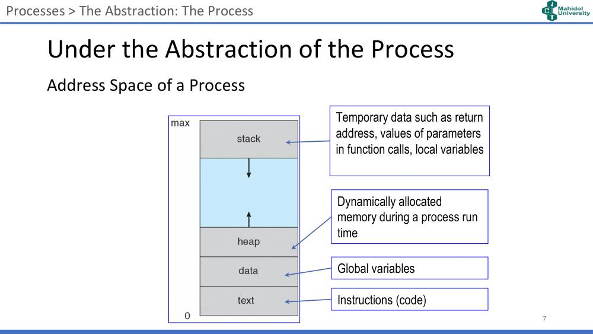
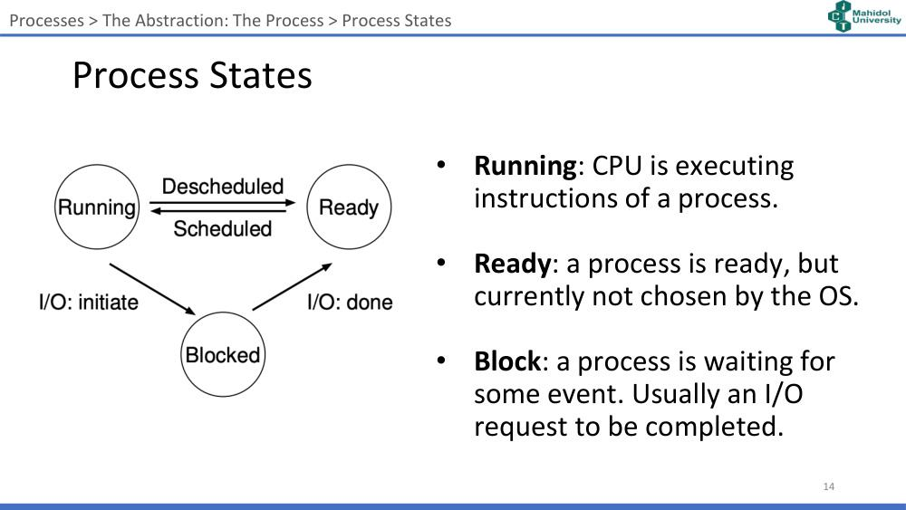
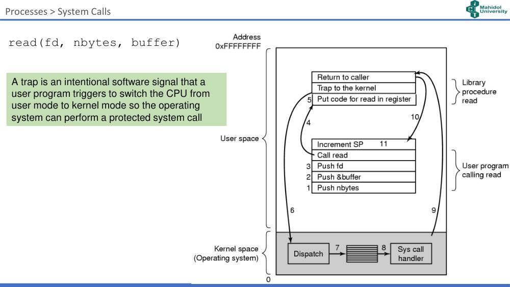

ภาพรวมบทนี้: (รศ.ดร.สุดสงวน งามสุริยโรจน์, 10 September 2026) Process คือ abstraction พื้นฐานที่สุดที่ OS ให้ — "โปรแกรมที่กำลังรัน"
เนื้อหา: program vs process, address space, process API และการสร้าง process, process states, PCB, UNIX API (fork, wait, exec), system calls (limited direct execution, dual mode, trap) และ context switching (timer interrupt)
บทนี้ตอบ 3 คำถาม: (1) Process API หน้าตาเป็นอย่างไร (2) process เข้าถึงทรัพยากรอย่างไร (3) OS สลับ process อย่างไร
1. Agenda (สไลด์ 2)
- Processes: Programs vs Processes, Process APIs and Process Creation, Process States, Process lists and PCB, Process Scheduling
- UNIX Process APIs
- System Calls
2. The Process (สไลด์ 3–6)
2.1 The Process (สไลด์ 4)
- รันโปรแกรมเองด้วยมือยาก — ใช้หลายขั้นตอนและข้อมูลมาก
- Multiprogramming และ Virtualization
- Process คือ abstraction พื้นฐานที่สุดที่ OS ให้
- The Process is a running program (process = โปรแกรมที่กำลังรัน)
- ผู้ใช้รันหลายโปรแกรมได้โดย ไม่ต้องสนใจว่า CPU ว่างหรือไม่
2.2 Program vs Process — เปรียบกับการอบขนม (สไลด์ 5)
| ในภาพ | เทียบกับ |
|---|---|
| Recipe (สูตร) | Program |
| Ingredient (แป้ง) | Input |
| Baker (คนอบ) | OS |
| Oven (เตาอบ) | Resources |
| "Baking" (การอบ) | Process |
2.3 Program vs Process (สไลด์ 6)
- Program = ลำดับคำสั่งพร้อมข้อมูล
- OS เป็นผู้รันโปรแกรม
- ภาพ: program (code, static data) อยู่บน Disk → Loading: นำโปรแกรมบน disk มาอ่านเข้า address space ของ process ใน Memory (code, static data, heap, stack) → CPU ทำงาน
⚠️ Program อยู่นิ่งบน disk | Process คือโปรแกรมที่ถูกโหลดเข้า memory และกำลังทำงาน
3. Under the Abstraction of the Process (สไลด์ 7–8)
3.1 Address Space of a Process (สไลด์ 7)
จาก address 0 (ล่าง) ถึง max (บน):
| ส่วน | เก็บอะไร |
|---|---|
| text | Instructions (code) |
| data | Global variables |
| heap | Dynamically allocated memory ระหว่าง process รัน (โตขึ้นข้างบน) |
| (ช่องว่าง) | |
| stack | ข้อมูลชั่วคราว เช่น return address, ค่า parameters ในการเรียกฟังก์ชัน, local variables (โตลงข้างล่าง) |

3.2 Machine state (สไลด์ 8)
- Process ซ่อนรายละเอียดของ machine state ขณะรันโปรแกรม
- ส่วนของเครื่องที่เกี่ยวข้องกับการรันโปรแกรม:
- คำสั่งและข้อมูลอยู่ใน memory (address space)
- คำสั่งจำนวนมากอ่าน/แก้ registers:
- general purpose registers (eax, ebx, …)
- program counter (PC)
- stack pointer
- frame pointer
- โปรแกรมมักเข้าถึง I/O devices เช่น ไฟล์ที่เปิดอยู่
4. Process Execution และ Processes in OS (สไลด์ 9–11)
4.1 Process Execution (สไลด์ 9) — "CPU สลับการทำงานระหว่าง Process"
- Program (Instruction #1…#N) บน Disk → Instantiate → Process ใน RAM
- CPU วนทำงานให้ Process 1–5 สลับกันไป
- RAM มี Process #1 … #M (Abstraction) → Collect pointers → Table of thread pointers and their priorities (Thread #1 high, #2 low, #3 med, #4 low, … #K high)
- Scheduler (Part of OS) เลือก thread มา Execute บน CPU, มี Context Switch และ Preemption
4.2 Processes in OS (สไลด์ 10–11)
- ภาพ Task Manager ของ Windows และ Activity Monitor ของ macOS แสดงรายการ process, %CPU, memory ฯลฯ
- Top command in Linux แสดง PID, USER, PR, NI, VIRT, RES, SHR, S (state), %CPU, %MEM, TIME+, COMMAND และสรุปจำนวน tasks (running, sleeping, stopped, zombie)
5. Process API และ Process Creation (สไลด์ 12–13)
5.1 Process API (สไลด์ 12)
| API | ความหมาย |
|---|---|
| Create | เริ่มโปรแกรม → สร้าง process |
| Destroy | ส่วนใหญ่ process จบเอง แต่ kill ได้ |
| Wait | process รอ process อื่น |
| Miscellaneous Control | เช่น suspend และ resume |
| Status | ดูสถานะ เช่น run time หรือ state |
5.2 Process Creation (สไลด์ 13)
- OS โหลด code และ static data จาก disk เข้า memory (code, data, heap, stack)
- OS กำหนด default I/O — ใน Unix คือ (a) standard input (b) standard output (c) standard error
- OS ตั้งคำสั่งแรก (เช่น main())
- OS โอนการควบคุม CPU ให้ process
6. Process States (สไลด์ 14–15)
6.1 สถานะ (สไลด์ 14)
| State | ความหมาย |
|---|---|
| Running | CPU กำลังทำคำสั่งของ process |
| Ready | process พร้อมแล้ว แต่ OS ยังไม่เลือก |
| Block (Blocked) | process รอเหตุการณ์บางอย่าง — ปกติรอ I/O request เสร็จ |
การเปลี่ยนสถานะ:
- Running → Ready: Descheduled
- Ready → Running: Scheduled
- Running → Blocked: I/O: initiate
- Blocked → Ready: I/O: done

⚠️ Blocked → Ready (ไม่ใช่ไป Running ทันที) เมื่อ I/O เสร็จ
6.2 Example of Process States (สไลด์ 15)
| Time | Process₀ | Process₁ | Notes |
|---|---|---|---|
| 1 | Running | Ready | |
| 2 | Running | Ready | |
| 3 | Running | Ready | Process₀ initiates I/O |
| 4 | Blocked | Running | Process₀ is blocked, |
| 5 | Blocked | Running | so Process₁ runs |
| 6 | Blocked | Running | |
| 7 | Ready | Running | I/O done |
| 8 | Ready | Running | Process₁ now done |
| 9 | Running | – | |
| 10 | Running | – | Process₀ now done |
💡 ขณะ Process₀ รอ I/O, CPU ไม่ว่างเปล่า เพราะ OS ให้ Process₁ รันแทน
7. Process Control Block — PCB (สไลด์ 16–19)
7.1 PCB คืออะไร (สไลด์ 16)
- OS ต้องติดตามข้อมูลต่าง ๆ ของ process — เช่น ต้องรู้ state เพื่อ schedule ถูก
- OS เก็บข้อมูลด้วย structures (ในภาษา C)
- structure ของ process แต่ละตัวเรียกว่า Process Control Block (PCB)
7.2 โครงสร้าง PCB (สไลด์ 17)
- Process Table: แต่ละแถวคือ PID (1, 2, …, n) ชี้ไปยัง PCB
- PCB แต่ละตัวมี: Program counter, Registers, State, Priority, Address space, Open files, …, Other flags
7.3 Examples of information of a process (สไลด์ 18)
PCB: process state, process number, program counter, registers, memory limits, list of open files, …
| Process management | Memory management | File management |
|---|---|---|
| Registers | Pointer to text segment | Root directory |
| Program counter | Pointer to data segment | Working directory |
| Program status word | Pointer to stack segment | File descriptors |
| Stack pointer | User ID | |
| Process state | Group ID | |
| Priority | ||
| Scheduling parameters | ||
| Process ID | ||
| Parent process | ||
| Process group | ||
| Signals | ||
| Time when process started | ||
| CPU time used | ||
| Children's CPU time | ||
| Time of next alarm |
7.4 An example of the PCB structure in C — xv6 (สไลด์ 19)
// the information xv6 tracks about each process
// including its register context and state
struct proc {
char *mem; // Start of process memory
uint sz; // Size of process memory
char *kstack; // Bottom of kernel stack for this process
enum proc_state state; // Process state
int pid; // Process ID
struct proc *parent; // Parent process
void *chan; // If !zero, sleeping on chan
int killed; // If !zero, has been killed
struct file *ofile[NOFILE]; // Open files
struct inode *cwd; // Current directory
struct context context; // Switch here to run process
struct trapframe *tf; // Trap frame for the current interrupt
};
struct context { int eip; int esp; int ebx; int ecx;
int edx; int esi; int edi; int ebp; };
// the different states a process can be in
enum proc_state { UNUSED, EMBRYO, SLEEPING, RUNNABLE, RUNNING, ZOMBIE };
8. UNIX Process API (สไลด์ 20–28)
Diving into detail (สไลด์ 20)
- What does the Process API look like? ← ส่วนนี้
- How does a process access resources?
- How does the OS switch between processes?
8.1 ตัวอย่างโปรแกรม C (สไลด์ 21)
#include <stdio.h>
void main () {
int x;
x = 10;
printf (" Hello World \n");
printf (" value of x is %d\n", x);
}
compile gcc -o first first.c → รัน ./first → พิมพ์ Hello World และ value of x is 10
8.2 fork() (สไลด์ 22–23)
- fork() ใช้สร้าง process ใหม่
- ความสัมพันธ์:
- process ที่เรียก fork() = parent process
- process ที่ถูก fork = child process
- child เริ่มต้นเป็นสำเนาเหมือน parent ทุกอย่าง!
- PID (Process Identifier) = ชื่อของ process
- fork() คืนค่า:
- PID ของ child ให้ parent
- 0 ให้ child
ตัวอย่าง (สไลด์ 23):
x = getpid();
printf(" PID of this process is %d\n", x);
printf(" create a process \n");
pid = fork();
if (pid > 0) {
printf(" I am a parent process with PID = %d of child process %d\n", getpid(), pid);
wait (NULL);
exit (0);
} else {
printf(" I am a child process with PID = %d\n", getpid());
printf(" My parent process with PID = %d\n", getppid());
exit(0);
}
ผลลัพธ์:
PID of this process is 2326
Create a Process
I am a parent process with PID = 2326 of child process 2327
I am a child process with PID = 2327
My parent process with PID = 2326
💡 ใช้ค่าที่ fork() คืนแยกว่าตอนนี้เป็น parent (pid > 0) หรือ child (pid == 0)
8.3 wait() (สไลด์ 24–25)
- wait() ทำให้ process หนึ่งรออีก process
- มีประโยชน์เมื่อต้องการให้ parent รอ child — เช่น ทำให้ child พิมพ์ก่อนเสมอ
ตัวอย่าง (สไลด์ 25):
printf(" starting a new process \n");
pid = fork();
printf ("main process id = %d\n", pid);
for (int i=0; i <2; i++) {
pid=fork();
printf ("process id in loop = %d\n", pid);
}
wait(NULL);
printf ("42\n");
return 0; // If this didn't work, use exit(0) instead.
- ผลลัพธ์ในภาพมีหลายบรรทัด "process ID in loop # … is …" (บางบรรทัดเป็น 0 = child) และพิมพ์ "42" หลายครั้ง เพราะ fork ในลูปสร้าง process หลายตัว
8.4 Address Space of Parent and Child (สไลด์ 26)
- เมื่อ fork แล้ว child มี address space และ PCB ของตัวเอง
- ภาพ: parent (stack, heap, data, text) → fork() → child มีโครงสร้างเดียวกันแยกต่างหาก
8.5 exec() (สไลด์ 27–28)
- exec() เป็นกลุ่ม system calls ที่ เปลี่ยน process ให้เป็นโปรแกรมอื่น
- exec() ไม่สร้าง process ใหม่
- ถ้าเรียกสำเร็จจะไม่ return กลับจาก exec()
- exec มี 6 รูปแบบ:
execl(path, arg0, arg1, ..., NULL)execv(path, argv)execlp(file, arg0, arg1, ..., NULL)execvp(file, argv)execle(path, arg0, arg1, ..., NULL, envp)execvpe(file, argv, envp)
| fork() | wait() | exec() | |
|---|---|---|---|
| ทำอะไร | สร้าง process ใหม่ (สำเนา parent) | รอ process อื่น (มัก parent รอ child) | เปลี่ยน process เป็นโปรแกรมอื่น |
| สร้าง process ใหม่? | ใช่ | ไม่ | ไม่ |
| return | child PID ให้ parent, 0 ให้ child | — | ไม่ return ถ้าสำเร็จ |
9. System Calls (สไลด์ 29–36)
Diving into detail (สไลด์ 29) — 2. How does a process access resources?
9.1 Limited Direct Execution (สไลด์ 30)
- OS เตรียม process แล้วให้รัน โดยตรงบน CPU → เรียกว่า "Direct Execution"
- OS (และ hardware) ป้องกันไม่ให้ user process เข้าถึงทรัพยากรระบบ (เพื่อความปลอดภัย)
- แล้ว process จะขอทรัพยากรเพิ่ม เช่น I/O ได้อย่างไร?
9.2 Dual mode Approach (สไลด์ 31)
OS และ hardware ทำงาน 2 โหมด:
| Mode | ความหมาย |
|---|---|
| User mode | เข้าถึงทรัพยากรได้จำกัด |
| Kernel mode | OS (kernel) รัน และทำ privileged operations ได้ |
- user process ใช้ system call เพื่อทำ privileged operation
9.3 Examples of System Calls (สไลด์ 32)
open(), read(), write(), close(), kill(), signal(), fork(), wait(), exec(), getpid(), link(), unlink(), mount(), chdir(), setuid(), getuid(), chown()
- standard library เปิดให้ใช้ system calls เป็นฟังก์ชัน C → เรียก system call ได้ด้วย procedure call ธรรมดา
9.4 System calls and Standard Library (สไลด์ 33)
| System calls | Library calls |
|---|---|
| open | fopen |
| close | fclose |
| read | fread, getchar, scanf, fscanf, getc, fgetc, gets, fgets |
| write | fwrite, putchar, printf, fprintf, putc, fputc, puts, fputs |
| lseek | fseek |
9.5 read(fd, nbytes, buffer) (สไลด์ 34)
- Trap = สัญญาณ software ที่ user program ตั้งใจสร้าง เพื่อ สลับ CPU จาก user mode ไป kernel mode ให้ OS ทำ system call ที่ถูกป้องกัน
- ขั้นตอนตามภาพ (address 0 ถึง 0xFFFFFFFF แบ่ง user space / kernel space):
- User program calling read: 1. Push nbytes 2. Push &buffer 3. Push fd 4. Call read
- Library procedure read: 5. Put code for read in register 6. Trap to the kernel
- Kernel space: 7. Dispatch → 8. Sys call handler
-
- กลับมาที่ library → 10. Return to caller
-
- Increment SP (ใน user program)

9.6 Steps of a System Call (สไลด์ 35–36)
1. Boot time
- Trap table บอก hardware ว่า trap handlers ของแต่ละ event (เช่น system call, keyboard interrupt) อยู่ที่ไหน
- Trap handlers คือฟังก์ชันพิเศษใน memory
2. Call system call
- Trap into OS (เพิ่ม privilege)
- Kernel stack เก็บข้อมูลของ process ที่เรียก เพื่อให้กลับได้ถูกต้อง
- return-from-trap เป็นคำสั่งพิเศษเพื่อกลับไป process ที่เรียก (ลด privilege)
ตาราง timeline (สไลด์ 35–36):
| OS (kernel mode) | Hardware | Program (user mode) |
|---|---|---|
| @ boot: initialize trap table | remember address of syscall handler | |
| @ run: create entry for process list, allocate memory, load program, setup user stack with argv, fill kernel stack with reg/PC, return-from-trap | ||
| restore regs (from kernel stack), move to user mode, jump to main | ||
| Run main() … Call system call, trap into OS | ||
| save regs (to kernel stack), move to kernel mode, jump to trap handler | ||
| Handle trap, do work of syscall, return-from-trap | ||
| restore regs (from kernel stack), move to user mode, jump to PC after trap | ||
| … return from main, trap (via exit()) | ||
| Free memory of process, remove from process list |
10. Context Switching (สไลด์ 37–41)
Diving into detail (สไลด์ 37) — 3. How does the OS switch between processes?
10.1 When will the OS get back the CPU? (สไลด์ 38)
มีหลายเหตุการณ์ที่ OS ต้องตัดสินใจว่า CPU จะรัน process ไหนต่อ:
- process yields (สละ CPU เอง)
- process ถูก block (โดย I/O)
- process สร้าง child แล้วรอ child จบ
- process จบการทำงาน
- แล้วถ้า process วนลูปไม่รู้จบล่ะ?
10.2 Timer Interrupt: Regaining CPU the safe way (สไลด์ 39)
- timer device ยก interrupt ทุก ๆ ไม่กี่มิลลิวินาที
- interrupt handler ใน OS ทำงาน → OS ได้ CPU คืน
- ระหว่าง boot:
- OS บอก hardware ว่าต้องรันโค้ดไหนเมื่อ timer interrupt
- OS เริ่ม timer
10.3 Saving and Restoring Context (สไลด์ 40)
Context switching: routine ของ OS เมื่อสลับ process ที่กำลังรัน
- Save context (registers) ของ process ที่กำลังรัน
- Restore context (registers) ของอีก process
10.4 Detail steps (สไลด์ 41)
| OS (kernel mode) | Hardware | Program (user mode) |
|---|---|---|
| @ boot: initialize trap table | remember addresses of syscall handler, timer handler | |
| start interrupt timer | start timer, interrupt CPU in X ms | |
| Process A … | ||
| timer interrupt: save regs(A) → k-stack(A), move to kernel mode, jump to trap handler | ||
| Handle the trap, call switch() routine: save regs(A) → proc_t(A), restore regs(B) ← proc_t(B), switch to k-stack(B), return-from-trap (into B) | ||
| restore regs(B) ← k-stack(B), move to user mode, jump to B's PC | ||
| Process B … |
💡 มีการ save registers 2 ครั้ง: hardware save ลง kernel stack ตอน interrupt และ OS save ลง proc_t (PCB) ตอน switch()
คำศัพท์สำคัญ
| คำศัพท์ | ความหมาย | จำง่าย ๆ ว่า |
|---|---|---|
| Process | running program | การอบขนม |
| Program | ลำดับคำสั่งพร้อมข้อมูล | สูตร |
| Address space | text, data, heap, stack | heap โตขึ้น stack โตลง |
| PC / SP / FP | program counter / stack pointer / frame pointer | machine state |
| Running / Ready / Blocked | สถานะ process | scheduled / descheduled / I/O |
| PCB | Process Control Block — struct เก็บข้อมูล process | ใน process table |
| PID | Process Identifier | |
| fork() | สร้าง child (สำเนา parent) | parent ได้ child PID, child ได้ 0 |
| wait() | รอ process อื่น | parent รอ child |
| exec() | เปลี่ยนเป็นโปรแกรมอื่น | ไม่สร้าง process ใหม่ |
| Direct execution | รันโปรแกรมตรงบน CPU | limited ด้วย dual mode |
| User / Kernel mode | สิทธิ์จำกัด / privileged | |
| System call | ขอบริการ OS | open, read, write, fork … |
| Trap | สัญญาณ software สลับไป kernel mode | |
| Trap table / handler | ตารางบอกที่อยู่ handler / ฟังก์ชันจัดการ | ตั้งตอน boot |
| return-from-trap | คำสั่งกลับ user mode | |
| Timer interrupt | ทำให้ OS ได้ CPU คืน | แก้ infinite loop |
| Context switch | save regs ของ A, restore regs ของ B | switch() |
สรุปท้ายบท / จุดที่มักออกสอบ
- Process = running program | program อยู่บน disk → loading เข้า address space
- Baker = OS, Recipe = Program, Ingredient = Input, Oven = Resources, Baking = Process
- Address space: text (code) → data (global) → heap (dynamic, โตขึ้น) … stack (ชั่วคราว, โตลง)
- Machine state: memory, registers (general, PC, SP, FP), I/O (open files)
- Process API: Create, Destroy, Wait, Miscellaneous control, Status
- Creation 4 ขั้น: load code/static data → init I/O (stdin, stdout, stderr) → ตั้งคำสั่งแรก (main) → โอน CPU
- States: Running ⇄ Ready (scheduled/descheduled), Running → Blocked (I/O initiate), Blocked → Ready (I/O done)
- PCB: PC, registers, state, priority, address space, open files, flags | process table: PID → PCB | xv6 states: UNUSED, EMBRYO, SLEEPING, RUNNABLE, RUNNING, ZOMBIE
- fork(): parent ได้ child PID, child ได้ 0, child มี address space และ PCB ของตัวเอง | wait(): parent รอ child | exec(): ไม่สร้าง process ใหม่, สำเร็จไม่ return, 6 รูปแบบ
- Limited direct execution: user mode vs kernel mode → system call → trap
- System call ↔ library: open/fopen, close/fclose, read/fread..., write/fwrite/printf..., lseek/fseek
- Boot: initialize trap table | call: trap into OS → kernel stack → handler → return-from-trap
- OS ได้ CPU คืนเมื่อ: yield, blocked, รอ child, terminate — และ timer interrupt (กันลูปไม่รู้จบ)
- Context switch: save regs(A) → restore regs(B) | timer interrupt → save regs(A) ลง k-stack(A) → switch() save ลง proc_t(A), restore จาก proc_t(B) → return-from-trap เข้า B